Naive Bayes Classification#
The previous four chapters have given a general overview of the concepts of machine learning. In this chapter and the ones that follow, we will be taking a closer look first at four algorithms for supervised learning, and then at four algorithms for unsupervised learning. We start here with our first supervised method, naive Bayes classification.
Naive Bayes models are a group of extremely fast and simple classification algorithms that are often suitable for very high-dimensional datasets. Because they are so fast and have so few tunable parameters, they end up being useful as a quick-and-dirty baseline for a classification problem. This chapter will provide an intuitive explanation of how naive Bayes classifiers work, followed by a few examples of them in action on some datasets.
Naive Bayes Classifier#
by: Eamonn Keogh, CS, UCR. PDF
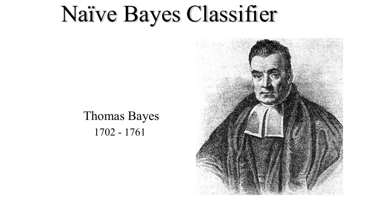
Thomas Bayes 1702 - 1761
We will start off with a visual intuition before looking at the math…
Grasshoppers vs. Katydids#
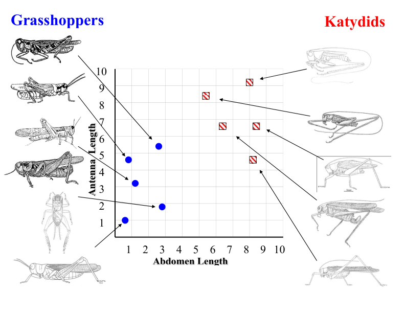
Antenna Length vs. Abdomen Length#
With a lot of data, we can build a histogram. Let us just build one for “Antenna Length” for now…
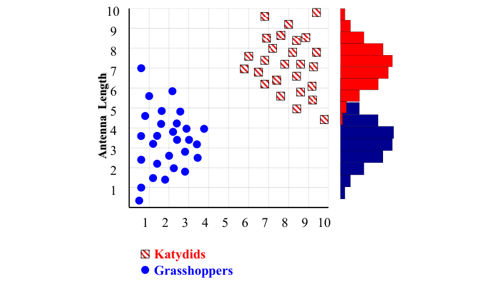
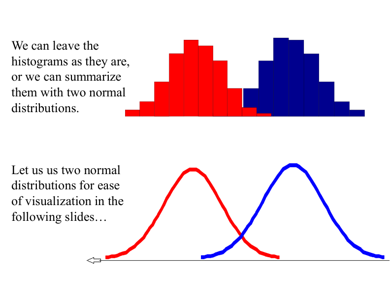
Classifying an Insect#
We want to classify an insect we have found. Its antennae are 3 units long. How can we classify it?
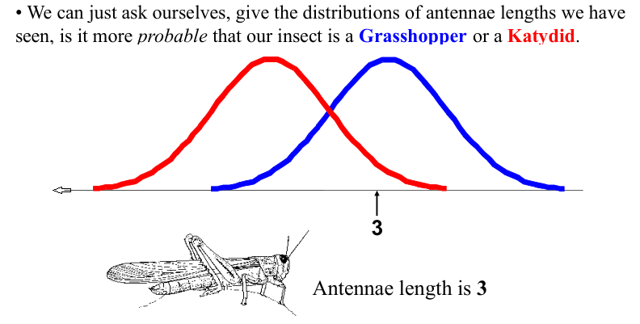
We can just ask ourselves, given the distributions of antennae lengths we have seen, is it more probable that our insect is a Grasshopper or a Katydid.
There is a formal way to discuss the most probable classification:
Example: Antennae Length is 3#
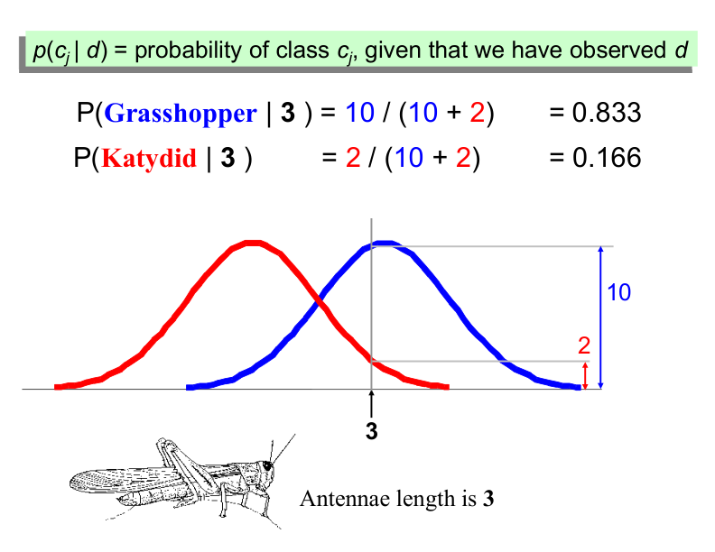
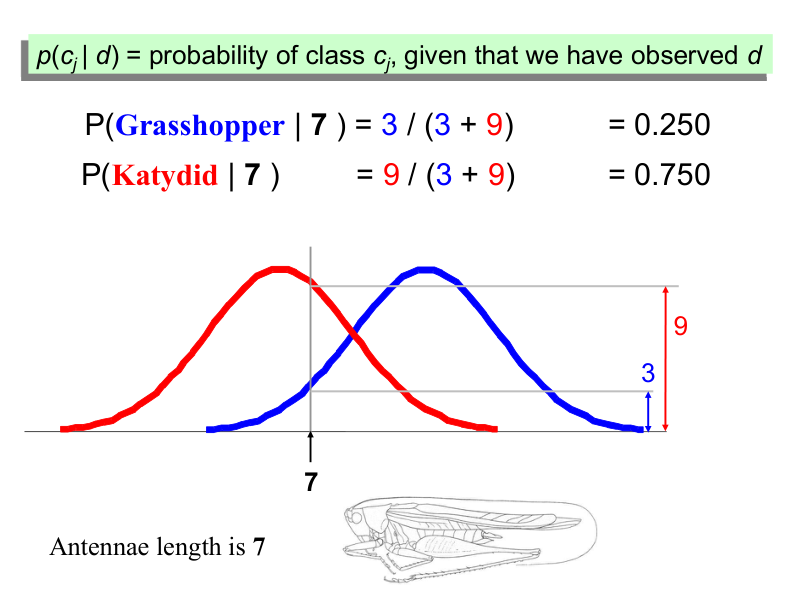
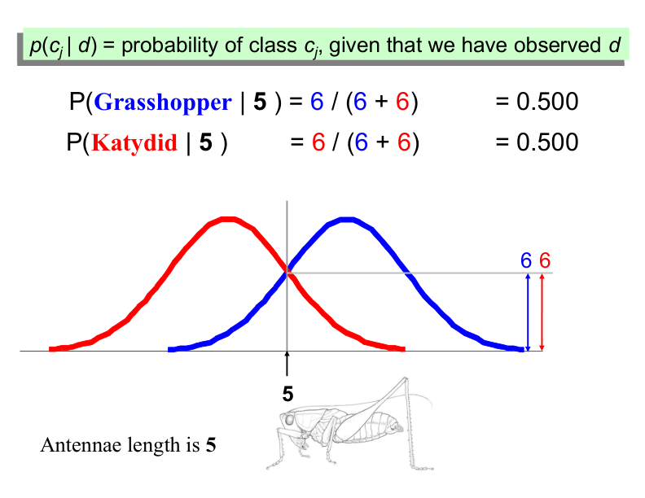
Bayes Classifiers#
That was a visual intuition for a simple case of the Bayes classifier, also called:
Idiot Bayes
Naïve Bayes
Simple Bayes
We are about to see some of the mathematical formalisms, and more examples, but keep in mind the basic idea.
Find out the probability of the previously unseen instance belonging to each class, then simply pick the most probable class.
Bayesian Classifiers#
Here’s the modified version of your text, explicitly specifying prior probability, likelihood, and evidence in the context of Bayes’ Theorem:
Bayesian Classifiers and Bayes’ Theorem#
Bayesian classifiers use Bayes’ Theorem, which is stated as:
Where:
Posterior Probability (\( p(c_j | d) \)):
The probability of class \( c_j \) given the observed instance \( d \). This is what we are trying to compute.Likelihood (\( p(d | c_j) \)):
The probability of observing instance \( d \) given that it belongs to class \( c_j \). This represents how likely the evidence (features of \( d \)) is under class \( c_j \).Prior Probability (\( p(c_j) \)):
The probability of class \( c_j \) occurring in the dataset. This is the “base rate” or how frequent the class is in the training data. (Represents the initial belief about the probability of each class before observing any evidence.)Evidence (\( p(d) \)):
The probability of observing instance \( d \) across all classes. Acts as a scaling factor to ensure the posterior probabilities sum to 1 and can often be ignored in classification tasks because it is the same for all classes.
Simplified Formula for Classification#
In practice, we often ignore the evidence term (\( p(d) \)) because it is the same for all classes. Thus, the formula simplifies to:
We calculate this for each class and assign the instance \( d \) to the class with the highest posterior probability.
Summary
Prior Probability: Initial belief about the class distribution.
Likelihood: Probability of the evidence given the class.
Evidence: Normalizing constant (often ignored).
Posterior Probability: Final probability of the class given the evidence.
Example: Classifying by Name#
Assume that we have two classes:
\( c_1 = \text{male}, \, \text{and} \, c_2 = \text{female}. \)
We have a person whose sex we do not know, say “Drew” or \( d \).
Classifying Drew as male or female is equivalent to asking which is greater:
\( p(\text{male} \, | \, \text{Drew}) \) or \( p(\text{female} \, | \, \text{Drew}) \).
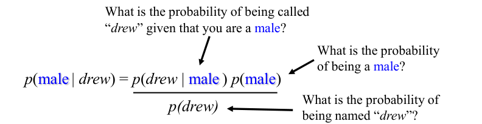#
Officer Drew Example#
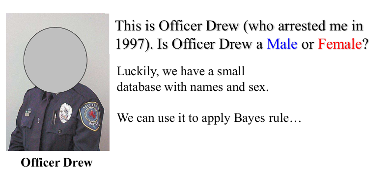
We have a small database with names and sex:
Name |
Sex |
|---|---|
Drew |
Male |
Claudia |
Female |
Drew |
Female |
Drew |
Female |
Alberto |
Male |
Karin |
Female |
Nina |
Female |
Sergio |
Male |
Calculating Probabilities for Officer Drew#
Officer Drew is more likely to be a Female!
Naive Bayes with Multiple Features#
So far, we have only considered Bayes Classification when we have one attribute (e.g., “antennae length” or “name”). But we may have many features. How do we use all the features?
To simplify the task, naive Bayesian classifiers assume attributes have independent distributions, and thereby estimate:
Example: Officer Drew with Multiple Features#
Name |
Over 170cm |
Eye |
Hair length |
Sex |
|---|---|---|---|---|
Drew |
No |
Blue |
Short |
Male |
Claudia |
Yes |
Brown |
Long |
Female |
Drew |
No |
Blue |
Long |
Female |
Drew |
No |
Blue |
Long |
Female |
Alberto |
Yes |
Brown |
Short |
Male |
Karin |
No |
Blue |
Long |
Female |
Nina |
Yes |
Brown |
Short |
Female |
Sergio |
Yes |
Blue |
Long |
Male |
Calculating Probabilities for Officer Drew with Multiple Features#
Both k-NN and NaiveBayes are classification algorithms. Conceptually, k-NN uses the idea of “nearness” to classify new entities. In k-NN ‘nearness’ is modeled with ideas such as Euclidean Distance or Cosine Distance. By contrast, in NaiveBayes, the concept of ‘probability’ is used to classify new entities.
Naive Bayes Classification with multiple features: Fruit Example#
In this example, we will use Naive Bayes to classify fruits based on their characteristics. We have a dataset of 1000 fruits, which are either Banana, Orange, or Other Fruit. Each fruit has three features:
Long: Whether the fruit is long.
Sweet: Whether the fruit is sweet.
Yellow: Whether the fruit is yellow.
Training Data#
Here is the training data:
Type |
Long |
Not Long |
Sweet |
Not Sweet |
Yellow |
Not Yellow |
Total |
|---|---|---|---|---|---|---|---|
Banana |
400 |
100 |
350 |
150 |
450 |
50 |
500 |
Orange |
0 |
300 |
150 |
150 |
300 |
0 |
300 |
Other Fruit |
100 |
100 |
150 |
50 |
50 |
150 |
200 |
Total |
500 |
500 |
650 |
350 |
800 |
200 |
1000 |
Step 1: Calculate Prior Probabilities#
The prior probabilities (base rates) are calculated based on the total number of fruits in each class:
Step 2: Calculate Evidence Probabilities#
The probabilities of each feature (evidence) in the entire dataset are:
Step 3: Calculate Likelihoods#
Next, we calculate the likelihood of each feature given the class.
For Banana:#
For Orange:#
For Other Fruit:#
Step 4: Classify a New Fruit#
Suppose we have a new fruit with the following features:
Long: Yes
Sweet: Yes
Yellow: Yes
We want to classify this fruit as either a Banana, Orange, or Other Fruit.
Calculate Posterior Probabilities#
We use Bayes’ Theorem to calculate the posterior probability for each class:
Since Naive Bayes assumes independence between features, we can simplify this to:
For Banana:#
For Orange:#
For Other Fruit:#
Step 5: Make a Prediction#
The posterior probabilities are:
\( P(\text{Banana} | \text{Long, Sweet, Yellow}) = 0.252 \)
\( P(\text{Orange} | \text{Long, Sweet, Yellow}) = 0 \)
\( P(\text{Other Fruit} | \text{Long, Sweet, Yellow}) = 0.01875 \)
Since \( P(\text{Banana} | \text{Long, Sweet, Yellow}) \) is the highest, we classify the new fruit as a Banana.
Key Takeaways#
Naive Bayes is a simple and efficient classification algorithm.
It assumes that features are independent of each other.
The algorithm works by calculating the posterior probability for each class and selecting the class with the highest probability.
Despite its simplicity, Naive Bayes performs well in many real-world applications, such as text classification.
This example demonstrates how Naive Bayes can be used to classify fruits based on multiple features. The same approach can be applied to other classification problems.
Show code cell content
%matplotlib inline
import numpy as np
import matplotlib.pyplot as plt
import seaborn as sns
plt.style.use('seaborn-whitegrid')
Gaussian Naive Bayes#
Perhaps the easiest naive Bayes classifier to understand is Gaussian naive Bayes. With this classifier, the assumption is that data from each label is drawn from a simple Gaussian distribution. Imagine that we have the following data, shown in Figure 41-1:
from sklearn.datasets import make_blobs
X, y = make_blobs(100, 2, centers=2, random_state=2, cluster_std=1.5)
plt.scatter(X[:, 0], X[:, 1], c=y, s=50, cmap='RdBu')
The simplest Gaussian model is to assume that the data is described by a Gaussian distribution with no covariance between dimensions. This model can be fit by computing the mean and standard deviation of the points within each label, which is all we need to define such a distribution. The result of this naive Gaussian assumption is shown in the following figure:
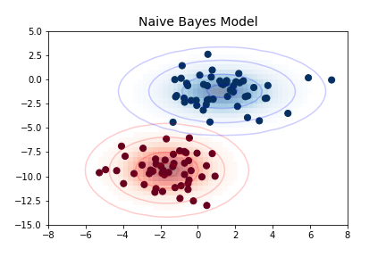
The ellipses here represent the Gaussian generative model for each label, with larger probability toward the center of the ellipses. With this generative model in place for each class, we have a simple recipe to compute the likelihood \(P({\rm features}~|~L_1)\) for any data point, and thus we can quickly compute the posterior ratio and determine which label is the most probable for a given point.
This procedure is implemented in Scikit-Learn’s sklearn.naive_bayes.GaussianNB estimator:
from sklearn.naive_bayes import GaussianNB
model = GaussianNB()
model.fit(X, y)
Let’s generate some new data and predict the label:
rng = np.random.RandomState(0)
Xnew = [-6, -14] + [14, 18] * rng.rand(2000, 2)
ynew = model.predict(Xnew)
Now we can plot this new data to get an idea of where the decision boundary is (see the following figure):
plt.scatter(X[:, 0], X[:, 1], c=y, s=50, cmap='RdBu')
lim = plt.axis()
plt.scatter(Xnew[:, 0], Xnew[:, 1], c=ynew, s=20, cmap='RdBu', alpha=0.1)
plt.axis(lim)
We see a slightly curved boundary in the classifications—in general, the boundary produced by a Gaussian naive Bayes model will be quadratic.
A nice aspect of this Bayesian formalism is that it naturally allows for probabilistic classification, which we can compute using the predict_proba method:
yprob = model.predict_proba(Xnew)
yprob[-8:].round(2)
array([[0.89, 0.11],
[1. , 0. ],
[1. , 0. ],
[1. , 0. ],
[1. , 0. ],
[1. , 0. ],
[0. , 1. ],
[0.15, 0.85]])
The columns give the posterior probabilities of the first and second labels, respectively. If you are looking for estimates of uncertainty in your classification, Bayesian approaches like this can be a good place to start.
Of course, the final classification will only be as good as the model assumptions that lead to it, which is why Gaussian naive Bayes often does not produce very good results. Still, in many cases—especially as the number of features becomes large—this assumption is not detrimental enough to prevent Gaussian naive Bayes from being a reliable method.
Multinomial Naive Bayes#
The Gaussian assumption just described is by no means the only simple assumption that could be used to specify the generative distribution for each label. Another useful example is multinomial naive Bayes, where the features are assumed to be generated from a simple multinomial distribution. The multinomial distribution describes the probability of observing counts among a number of categories, and thus multinomial naive Bayes is most appropriate for features that represent counts or count rates.
The idea is precisely the same as before, except that instead of modeling the data distribution with the best-fit Gaussian, we model it with a best-fit multinomial distribution.
Example: Classifying Text#
One place where multinomial naive Bayes is often used is in text classification, where the features are related to word counts or frequencies within the documents to be classified. We discussed the extraction of such features from text in Feature Engineering; here we will use the sparse word count features from the 20 Newsgroups corpus made available through Scikit-Learn to show how we might classify these short documents into categories.
Let’s download the data and take a look at the target names:
from sklearn.datasets import fetch_20newsgroups
data = fetch_20newsgroups()
data.target_names
['alt.atheism',
'comp.graphics',
'comp.os.ms-windows.misc',
'comp.sys.ibm.pc.hardware',
'comp.sys.mac.hardware',
'comp.windows.x',
'misc.forsale',
'rec.autos',
'rec.motorcycles',
'rec.sport.baseball',
'rec.sport.hockey',
'sci.crypt',
'sci.electronics',
'sci.med',
'sci.space',
'soc.religion.christian',
'talk.politics.guns',
'talk.politics.mideast',
'talk.politics.misc',
'talk.religion.misc']
For simplicity here, we will select just a few of these categories and download the training and testing sets:
categories = ['talk.religion.misc', 'soc.religion.christian',
'sci.space', 'comp.graphics']
train = fetch_20newsgroups(subset='train', categories=categories)
test = fetch_20newsgroups(subset='test', categories=categories)
Here is a representative entry from the data:
print(train.data[5][48:])
Subject: Federal Hearing
Originator: dmcgee@uluhe
Organization: School of Ocean and Earth Science and Technology
Distribution: usa
Lines: 10
Fact or rumor....? Madalyn Murray O'Hare an atheist who eliminated the
use of the bible reading and prayer in public schools 15 years ago is now
going to appear before the FCC with a petition to stop the reading of the
Gospel on the airways of America. And she is also campaigning to remove
Christmas programs, songs, etc from the public schools. If it is true
then mail to Federal Communications Commission 1919 H Street Washington DC
20054 expressing your opposition to her request. Reference Petition number
2493.
In order to use this data for machine learning, we need to be able to convert the content of each string into a vector of numbers. For this we will use the TF-IDF vectorizer (introduced in Feature Engineering), and create a pipeline that attaches it to a multinomial naive Bayes classifier:
from sklearn.feature_extraction.text import TfidfVectorizer
from sklearn.naive_bayes import MultinomialNB
from sklearn.pipeline import make_pipeline
model = make_pipeline(TfidfVectorizer(), MultinomialNB())
With this pipeline, we can apply the model to the training data and predict labels for the test data:
model.fit(train.data, train.target)
labels = model.predict(test.data)
Now that we have predicted the labels for the test data, we can evaluate them to learn about the performance of the estimator. For example, let’s take a look at the confusion matrix between the true and predicted labels for the test data (see the following figure):
from sklearn.metrics import confusion_matrix
mat = confusion_matrix(test.target, labels)
sns.heatmap(mat.T, square=True, annot=True, fmt='d', cbar=False,
xticklabels=train.target_names, yticklabels=train.target_names,
cmap='Blues')
plt.xlabel('true label')
plt.ylabel('predicted label');
Evidently, even this very simple classifier can successfully separate space discussions from computer discussions, but it gets confused between discussions about religion and discussions about Christianity. This is perhaps to be expected!
The cool thing here is that we now have the tools to determine the category for any string, using the predict method of this pipeline.
Here’s a utility function that will return the prediction for a single string:
def predict_category(s, train=train, model=model):
pred = model.predict([s])
return train.target_names[pred[0]]
Let’s try it out:
predict_category('sending a payload to the ISS')
'sci.space'
predict_category('discussing the existence of God')
'soc.religion.christian'
predict_category('determining the screen resolution')
'comp.graphics'
Remember that this is nothing more sophisticated than a simple probability model for the (weighted) frequency of each word in the string; nevertheless, the result is striking. Even a very naive algorithm, when used carefully and trained on a large set of high-dimensional data, can be surprisingly effective.
Further Readning#
When to Use Naive Bayes#
Because naive Bayes classifiers make such stringent assumptions about data, they will generally not perform as well as more complicated models. That said, they have several advantages:
They are fast for both training and prediction.
They provide straightforward probabilistic prediction.
They are often easily interpretable.
They have few (if any) tunable parameters.
These advantages mean a naive Bayes classifier is often a good choice as an initial baseline classification. If it performs suitably, then congratulations: you have a very fast, very interpretable classifier for your problem. If it does not perform well, then you can begin exploring more sophisticated models, with some baseline knowledge of how well they should perform.
Naive Bayes classifiers tend to perform especially well in the following situations:
When the naive assumptions actually match the data (very rare in practice)
For very well-separated categories, when model complexity is less important
For very high-dimensional data, when model complexity is less important
The last two points seem distinct, but they actually are related: as the dimensionality of a dataset grows, it is much less likely for any two points to be found close together (after all, they must be close in every single dimension to be close overall). This means that clusters in high dimensions tend to be more separated, on average, than clusters in low dimensions, assuming the new dimensions actually add information. For this reason, simplistic classifiers like the ones discussed here tend to work as well or better than more complicated classifiers as the dimensionality grows: once you have enough data, even a simple model can be very powerful.